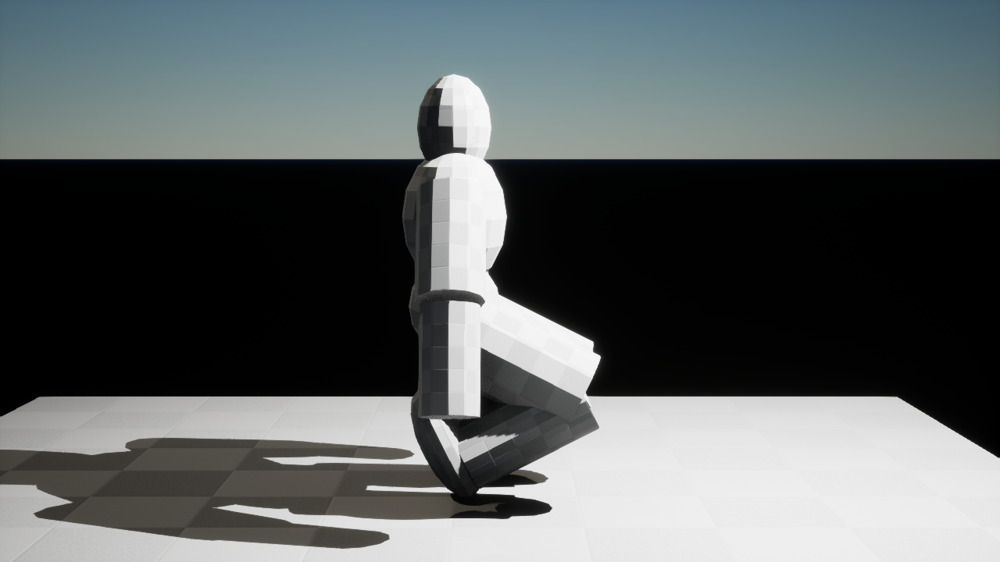
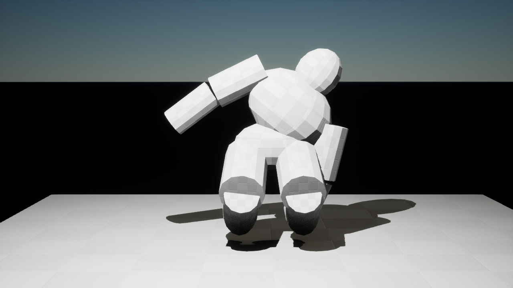
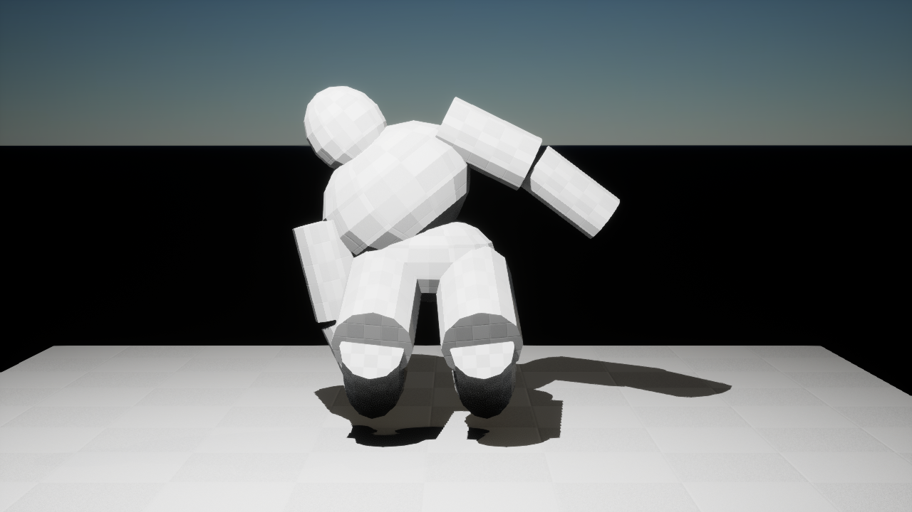
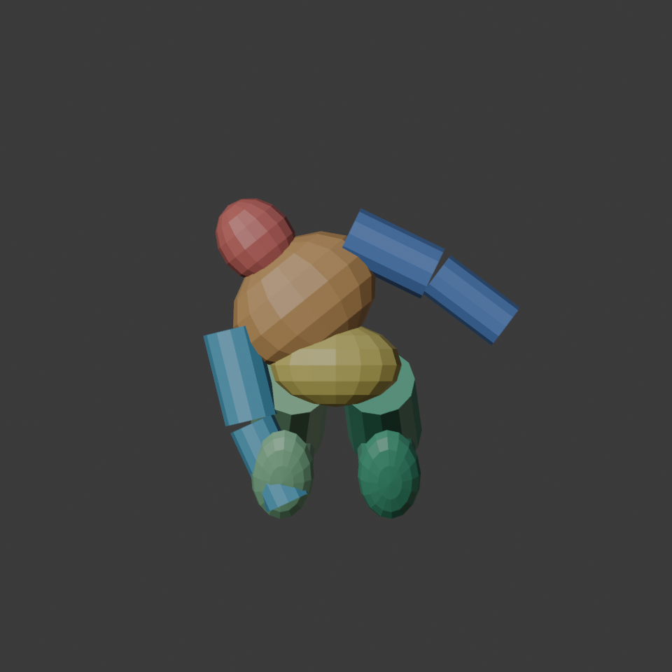
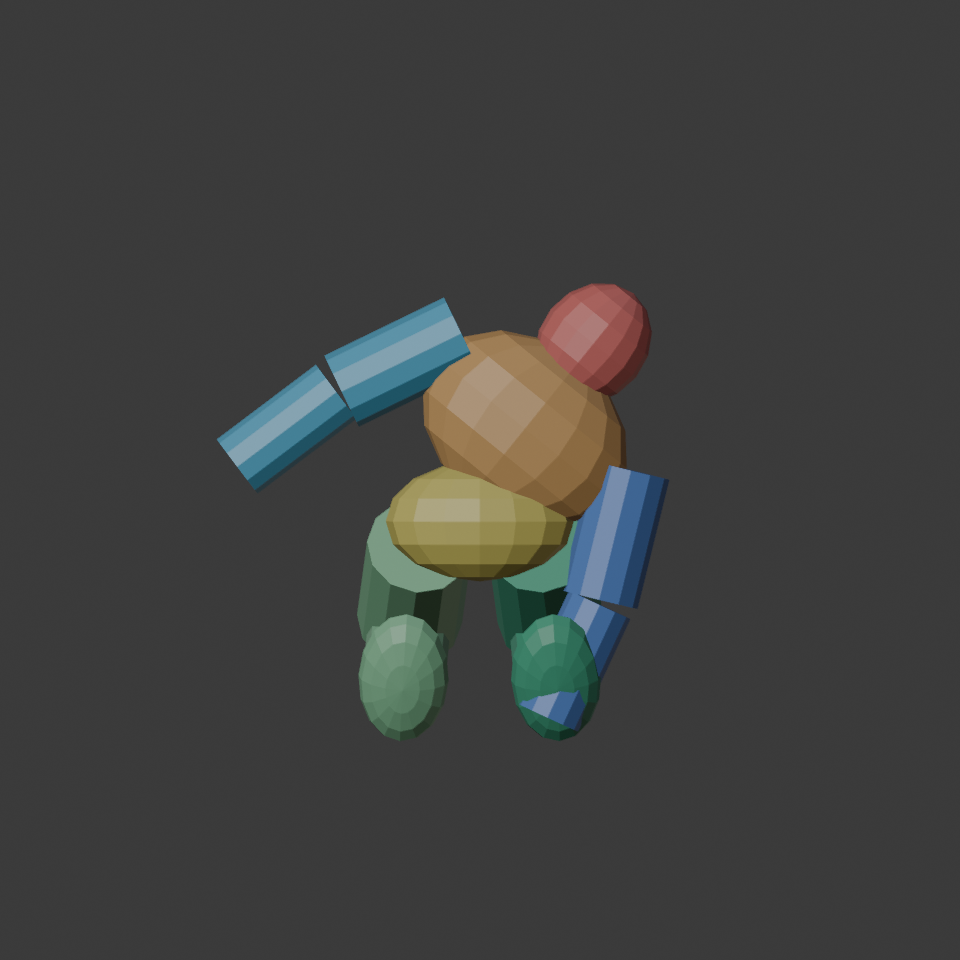

Neutral crouch · side
Existing crouch pose for comparison.
Topside / Combat + Medical / V03
The game allows leaning while crouched, so this adds both directions to the isolated anatomy pilot. Compare the new front views with the crouch baseline. Tap an image to open it full size on your phone.

Existing crouch pose for comparison.

Low stance with head and chest displaced sideways.

Mirrored direction at the same height and offset.

Color shows the seven injury regions; it is not final material art.

Mirrored skeletal key and static QA snapshot.